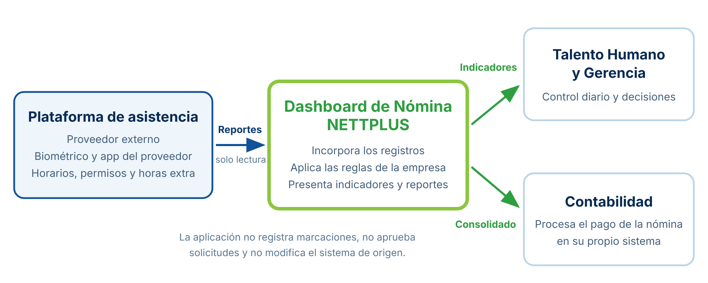

| Campo | Detalle |
|---|---|
| Proyecto | Dashboard de Nómina para NETTPLUS |
| Asignatura | Ingeniería Web |
| Documento | Especificación de requisitos funcionales y no funcionales |
| Cliente | NETTPLUS — Área de Talento Humano |
| Fuente de los requisitos | Reunión de levantamiento con el cliente del 14 de octubre de 2026 y revisión de los reportes que produce la plataforma de asistencia |
| Autor | Josué Quinche |
| Versión y fecha | 1.0 — |
1. Descripción General del Proyecto
1.1. Problema identificado
NETTPLUS registra la asistencia de su personal en una plataforma provista por una empresa externa. La marcación se realiza con lectura biométrica facial en el edificio matriz y, para quienes trabajan fuera de él, mediante una aplicación móvil. En esa misma plataforma se administran los horarios asignados a cada colaborador, incluidos horarios rotativos, por jornadas y temporales, y se tramitan las solicitudes de permisos y de horas extra con su flujo de aprobación.
El registro, por tanto, funciona. El problema aparece después. Durante la reunión de levantamiento, el área de Talento Humano lo expresó con claridad: la plataforma registra, pero no entrega un resumen de lo que ocurre. Para cerrar cada periodo, el personal descarga varios reportes distintos, algunos con una hoja por colaborador, y los consolida manualmente en hojas de cálculo para responder preguntas elementales. Cuántas horas suplementarias y extraordinarias se generaron. Quiénes llegaron atrasados. Quiénes estuvieron de vacaciones. Qué novedades deben revisarse antes del pago.
El resultado de ese trabajo se entrega al área de Contabilidad, que vuelve a digitarlo en su propio sistema. El procedimiento consume varias jornadas de trabajo calificado cada mes, concentra el conocimiento del cálculo en una sola persona y deja poco margen para detectar inconsistencias antes de que el pago se haya realizado.
1.2. Necesidad del cliente
El cliente identificó tres frentes en los que requiere apoyo, y que ordenan el propósito de la aplicación:
- El control diario de la asistencia, para saber el mismo día quién asistió, quién llegó atrasado y qué marcaciones quedaron incompletas.
- La retroalimentación al colaborador, que hoy no cuenta con información sistematizada que la sustente.
- La preparación del pago de la nómina, que depende de un consolidado mensual que se arma a mano.
1.3. Objetivo de la aplicación web
Desarrollar una aplicación web que incorpore los registros de asistencia que produce la plataforma actual, los interprete aplicando las reglas de la empresa y presente indicadores diarios y del periodo, además de generar el reporte mensual que requiere el proceso de nómina, con el fin de reducir el trabajo manual de consolidación y entregar información verificable para la toma de decisiones.
1.4. Contexto de la solución
La aplicación no reemplaza a la plataforma de asistencia ni al sistema contable. Se ubica entre ambos y cubre el espacio que hoy ocupan las hojas de cálculo. Su relación con la fuente de datos es de lectura: no registra marcaciones, no aprueba solicitudes y no modifica ningún dato en el sistema de origen.

2. Identificación de Usuarios
Durante la reunión, el cliente precisó quiénes consultarían la información y con qué alcance. Señaló además que los líderes de área no se contemplan todavía como usuarios, y que la administración del sistema permanece en Talento Humano. Esa decisión se respeta en esta versión y se registra en el apartado de exclusiones.
| Tipo de usuario | Descripción | Responsabilidades principales | Frecuencia |
|---|---|---|---|
| Asistente de Talento Humano | Usuaria operativa. Es quien hoy ejecuta manualmente el proceso de consolidación. |
|
Diaria |
| Jefatura de Talento Humano | Usuaria de análisis y configuración. Define las políticas de asistencia. |
|
Semanal |
| Analista de Contabilidad | Usuaria de alcance restringido. Procesa la nómina con la información consolidada. |
|
Mensual |
| Gerencia | Usuaria de consulta. Utiliza información agregada para decisiones de gestión. |
|
Mensual |
| Administrador del sistema | Perfil técnico responsable del funcionamiento de la aplicación. |
|
Eventual |
Nota. Los colaboradores de la empresa no son usuarios de esta aplicación. Continúan registrando su marcación y tramitando sus solicitudes en la plataforma de origen.
3. Requisitos Funcionales
Los requisitos funcionales describen lo que la aplicación debe permitir realizar. Se presentan agrupados por módulo y numerados de forma correlativa. La prioridad alta corresponde a los requisitos sin los cuales la aplicación no resuelve el problema planteado por el cliente; la prioridad media identifica funcionalidades que aportan valor y pueden posponerse si el plazo lo exige. En el Anexo A se muestra la correspondencia entre cada necesidad expresada en la reunión y los requisitos que la atienden.
3.1. Módulo 1. Incorporación de datos de asistencia
| Código | Nombre | Descripción del requisito | Usuario | Prioridad |
|---|---|---|---|---|
| RF01 | Cargar los reportes de marcaciones | El sistema deberá permitir que el usuario cargue, desde una pantalla web, los reportes de marcaciones exportados de la plataforma de asistencia, en formato de hoja de cálculo o de valores separados por comas, incluidos los archivos que contienen una hoja por colaborador. | Asistente de TH | Alta |
| RF02 | Validar el archivo antes de confirmar la carga | El sistema deberá mostrar, antes de incorporar los datos, un informe que indique cuántos registros se aceptan, cuántos se rechazan y el motivo de cada rechazo con su número de fila, junto con una vista previa del contenido. | Asistente de TH | Alta |
| RF03 | Evitar la duplicación de registros | El sistema deberá descartar los registros que ya existan al cargar nuevamente un mismo archivo, e informar cuántos fueron omitidos por esa razón. | Asistente de TH | Alta |
| RF04 | Cargar los catálogos complementarios | El sistema deberá permitir la carga de los reportes de colaboradores, horarios asignados por día, permisos y horas extra, con el estado de aprobación de cada solicitud. | Asistente de TH | Alta |
| RF05 | Sincronizar con la plataforma de origen | El sistema deberá permitir obtener los registros directamente desde la interfaz de programación de la plataforma de asistencia, sin intervención manual, cuando el proveedor habilite el acceso. | Administrador | Media |
3.2. Módulo 2. Interpretación de la asistencia
| Código | Nombre | Descripción del requisito | Usuario | Prioridad |
|---|---|---|---|---|
| RF06 | Conciliar los registros con el catálogo de colaboradores | El sistema deberá asociar cada marcación con el colaborador que le corresponde y listar aparte los registros cuyo identificador no exista en el catálogo. | Sistema | Alta |
| RF07 | Construir la jornada diaria | El sistema deberá determinar, para cada colaborador y fecha, la hora de entrada, la hora de salida y el tiempo trabajado, tomando como referencia el horario que tenía asignado ese día. | Sistema | Alta |
| RF08 | Consolidar los turnos que cruzan la medianoche | El sistema deberá unir en una sola jornada los turnos que la plataforma de origen registra divididos en dos tramos al cambiar de día, y atribuirla a la fecha en que inició el turno. | Sistema | Alta |
| RF09 | Clasificar el comportamiento de la jornada | El sistema deberá asignar a cada jornada uno de los siguientes estados: asistencia puntual, atraso, salida anticipada, ausencia, marcación incompleta, descanso, feriado o permiso, indicando los minutos de desviación cuando corresponda. | Sistema | Alta |
| RF10 | Calcular las horas suplementarias y extraordinarias | El sistema deberá calcular las horas trabajadas y separar las que exceden la jornada ordinaria, distinguiendo entre suplementarias y extraordinarias según el día y el tramo horario. | Sistema | Alta |
| RF11 | Aplicar el estado de aprobación de las novedades | El sistema deberá computar únicamente los permisos y las horas extra que tengan aprobación registrada, y presentar las solicitudes pendientes en una lista aparte con su efecto potencial en horas. | Sistema | Alta |
| RF12 | Contrastar las horas extra con las marcaciones | El sistema deberá señalar las horas extra autorizadas que no cuenten con marcación que las respalde y la permanencia fuera del horario que no cuente con autorización registrada. | Jefatura de TH | Media |
| RF13 | Explicar el resultado de cada jornada | El sistema deberá mostrar, al consultar el detalle de una jornada, la regla aplicada y las marcaciones que originaron el resultado. | Asistente de TH | Alta |
3.3. Módulo 3. Configuración
| Código | Nombre | Descripción del requisito | Usuario | Prioridad |
|---|---|---|---|---|
| RF14 | Administrar los parámetros de cálculo | El sistema deberá permitir modificar desde la interfaz las tolerancias de atraso y de salida anticipada, la duración de la jornada ordinaria, el calendario de feriados, los recargos y las fechas del periodo de corte, registrando la fecha de vigencia de cada cambio. | Jefatura de TH | Alta |
3.4. Módulo 4. Visualización de indicadores
| Código | Nombre | Descripción del requisito | Usuario | Prioridad |
|---|---|---|---|---|
| RF15 | Consultar la asistencia del día | El sistema deberá presentar en una sola pantalla, para la fecha seleccionada, el total de colaboradores esperados, los que asistieron, los que llegaron atrasados, los ausentes y las marcaciones incompletas, con el listado de las excepciones. | Asistente de TH | Alta |
| RF16 | Consultar los indicadores del periodo | El sistema deberá presentar el porcentaje de puntualidad, los minutos de atraso acumulados, el ausentismo justificado y no justificado y las horas suplementarias y extraordinarias del periodo, con filtros por área, colaborador y rango de fechas. | Jefatura de TH | Alta |
| RF17 | Consultar la dotación de personal y la rotación | El sistema deberá calcular el número de colaboradores activos, las incorporaciones, las desvinculaciones y el índice de rotación, de forma general y por área. | Jefatura de TH / Gerencia | Media |
| RF18 | Generar la ficha de retroalimentación del colaborador | El sistema deberá generar un documento individual con la tendencia de atrasos, ausencias y horas extra del colaborador frente al periodo anterior, incluyendo el detalle de los días que sustentan cada cifra. | Jefatura de TH | Media |
3.5. Módulo 5. Cierre del periodo y reportes
| Código | Nombre | Descripción del requisito | Usuario | Prioridad |
|---|---|---|---|---|
| RF19 | Cerrar el periodo con revisión previa de novedades | El sistema deberá enumerar, antes de permitir el cierre, las marcaciones incompletas, las jornadas sin marcación y las solicitudes pendientes de aprobación, cuantificando su efecto en horas, y deberá registrar la fecha y el usuario que ejecutó el cierre. | Asistente de TH | Alta |
| RF20 | Generar el reporte mensual para nómina | El sistema deberá generar el consolidado del periodo por colaborador con los días laborados, las ausencias justificadas y no justificadas, los minutos de atraso y las horas suplementarias y extraordinarias, descargable en formato de hoja de cálculo y documento portátil. | Asistente de TH / Contabilidad | Alta |
3.6. Módulo 6. Correcciones, seguridad y auditoría
| Código | Nombre | Descripción del requisito | Usuario | Prioridad |
|---|---|---|---|---|
| RF21 | Corregir una jornada con justificación | El sistema deberá permitir que el usuario autorizado modifique una jornada registrando el motivo de la corrección, sin alterar la marcación original y conservando el valor anterior. | Asistente de TH | Alta |
| RF22 | Controlar el acceso según el perfil del usuario | El sistema deberá exigir autenticación y limitar las pantallas y los datos visibles al perfil de cada usuario, de modo que Contabilidad y Gerencia accedan solo a la información que les corresponde. | Administrador | Alta |
| RF23 | Consultar la bitácora de auditoría | El sistema deberá registrar y permitir consultar quién cargó cada archivo, quién corrigió qué jornada, quién cerró el periodo y quién descargó cada reporte, con la fecha y hora de cada operación. | Jefatura de TH / Administrador | Alta |
3.7. Módulo 7. Operaciones administrativas del periodo
| Código | Nombre | Descripción del requisito | Usuario | Prioridad |
|---|---|---|---|---|
| RF24 | Recalcular un periodo abierto | El sistema deberá permitir volver a procesar las jornadas de un periodo no cerrado cuando cambie un parámetro, se incorporen registros nuevos o se apruebe una novedad pendiente, conservando los ajustes manuales ya registrados. | Asistente de TH | Alta |
| RF25 | Reabrir un periodo cerrado | El sistema deberá permitir reabrir un periodo cerrado dejando constancia del motivo y del usuario, e invalidar el reporte emitido antes de la reapertura. | Jefatura de TH | Media |
| RF26 | Gestionar usuarios y perfiles de acceso | El sistema deberá permitir crear, modificar y desactivar usuarios, asignarles un perfil y, cuando corresponda, un área de alcance. | Administrador | Alta |
3.8. Resumen de los requisitos funcionales
| Módulo | Requisitos | Alta | Media | Total |
|---|---|---|---|---|
| 1. Incorporación de datos de asistencia | RF01 a RF05 | 4 | 1 | 5 |
| 2. Interpretación de la asistencia | RF06 a RF13 | 7 | 1 | 8 |
| 3. Configuración | RF14 | 1 | 0 | 1 |
| 4. Visualización de indicadores | RF15 a RF18 | 2 | 2 | 4 |
| 5. Cierre del periodo y reportes | RF19 y RF20 | 2 | 0 | 2 |
| 6. Correcciones, seguridad y auditoría | RF21 a RF23 | 3 | 0 | 3 |
| 7. Operaciones administrativas del periodo | RF24 a RF26 | 2 | 1 | 3 |
| Total | RF01 a RF26 | 21 | 5 | 26 |
Nota. Los veintiún requisitos de prioridad alta constituyen el producto mínimo que resuelve la necesidad planteada por el cliente.
4. Requisitos No Funcionales
Los requisitos no funcionales establecen las condiciones que la aplicación debe cumplir, con independencia de las funciones que ejecute. Se organizan según los aspectos solicitados y cada uno se acompaña del criterio con el que podrá comprobarse. Esa última columna es deliberada: un requisito que no puede verificarse no sirve para aceptar ni para rechazar un producto.
4.1. Seguridad
| Código | Enunciado | Criterio de verificación |
|---|---|---|
| RNF01 | El acceso a la aplicación exigirá autenticación con usuario y contraseña. Ninguna pantalla con datos de colaboradores será accesible sin sesión iniciada. | Intentar abrir cada dirección interna sin sesión y comprobar que el sistema redirige al inicio de sesión. |
| RNF02 | Las contraseñas se almacenarán cifradas mediante funciones de resumen criptográfico. En ningún caso se guardarán ni se mostrarán en texto plano. | Revisar la tabla de usuarios y comprobar que ningún campo contiene la contraseña legible. |
| RNF03 | Cada perfil accederá únicamente a las pantallas y a los datos de su alcance. Contabilidad verá solo el consolidado del periodo cerrado y Gerencia solo indicadores agregados, sin detalle individual. | Ejecutar pruebas de acceso con los cinco perfiles definidos y verificar que cada intento fuera de alcance es rechazado. |
| RNF04 | La comunicación entre el navegador y el servidor se realizará cifrada mediante HTTPS, con verificación del certificado. | Comprobar que el acceso por HTTP redirige a HTTPS y que el certificado es válido. |
| RNF05 | El sistema no almacenará datos biométricos de los colaboradores. Trabajará únicamente con el identificador del empleado y el instante de la marcación, conforme a la Ley Orgánica de Protección de Datos Personales. | Revisar el modelo de datos y confirmar la ausencia de campos biométricos; verificar que los datos de demostración están anonimizados. |
| RNF06 | Toda operación sensible quedará registrada en una bitácora no editable desde la aplicación, con usuario, fecha y detalle. | Ejecutar una carga, una corrección y un cierre, y comprobar que los tres asientos aparecen en la bitácora. |
4.2. Usabilidad
| Código | Enunciado | Criterio de verificación |
|---|---|---|
| RNF07 | Una persona del área de Talento Humano completará el flujo de cargar un archivo, revisar el resultado y descargar el reporte en menos de diez minutos, sin capacitación previa. | Prueba con una usuaria real del área, midiendo el tiempo de ejecución del flujo completo. |
| RNF08 | Los mensajes de error indicarán qué se rechazó, dónde está el problema y qué debe hacerse para corregirlo, en lenguaje del negocio y sin términos técnicos. | Cargar un archivo con errores deliberados y revisar que cada mensaje cumple las tres condiciones. |
| RNF09 | La interfaz utilizará los colores corporativos de NETTPLUS y mantendrá la misma estructura de navegación en todas las pantallas. | Revisión visual contra el manual de identidad que entregue la empresa. |
| RNF10 | Las operaciones que no pueden deshacerse, como el cierre del periodo, solicitarán confirmación explícita indicando sus consecuencias. | Verificar que cada operación irreversible presenta un cuadro de confirmación antes de ejecutarse. |
4.3. Accesibilidad
| Código | Enunciado | Criterio de verificación |
|---|---|---|
| RNF11 | La aplicación cumplirá el nivel AA de las Pautas de Accesibilidad para el Contenido Web (WCAG 2.1) en sus pantallas principales. | Auditoría con una herramienta automática de accesibilidad y revisión manual de los puntos que esta no cubre. |
| RNF12 | El contraste entre el texto y su fondo será de al menos 4,5:1 para texto normal y 3:1 para texto grande y elementos de interfaz. | Medición del contraste de la paleta corporativa con un verificador de contraste. |
| RNF13 | Toda la aplicación podrá operarse con teclado, con un orden de tabulación coherente y foco visible en el elemento activo. | Recorrer el flujo completo sin usar el ratón. |
| RNF14 | La información no se transmitirá únicamente mediante color. Los estados de la jornada se acompañarán de texto o de un icono con descripción alternativa. | Revisar el tablero en escala de grises y comprobar que los estados siguen siendo distinguibles. |
| RNF15 | Los campos de formulario tendrán etiquetas asociadas y las imágenes y gráficos contarán con texto alternativo que describa su contenido. | Inspección del marcado y lectura de una pantalla con un lector de pantalla. |
4.4. Rendimiento
| Código | Enunciado | Criterio de verificación |
|---|---|---|
| RNF16 | El procesamiento completo de un periodo mensual no superará los treinta segundos en el entorno de despliegue previsto. | Medición del tiempo de procesamiento con el volumen real de un mes. |
| RNF17 | Las pantallas del tablero se presentarán en menos de tres segundos con el volumen de datos de un año. | Medición del tiempo de respuesta con la base cargada con doce periodos. |
| RNF18 | La carga y validación de un archivo de un periodo no superará los quince segundos antes de mostrar la vista previa. | Medición con el archivo de mayor tamaño que entregue la empresa. |
| RNF19 | El sistema operará con los recursos de un servidor de gama media, sin requerir infraestructura especializada. | Monitoreo del consumo de memoria y procesador durante el procesamiento de un periodo. |
4.5. Compatibilidad
| Código | Enunciado | Criterio de verificación |
|---|---|---|
| RNF20 | La aplicación funcionará en las versiones vigentes de Google Chrome, Microsoft Edge y Mozilla Firefox. | Ejecución del flujo principal en los tres navegadores. |
| RNF21 | La interfaz se adaptará a anchos de 360, 768 y 1280 píxeles sin desplazamiento horizontal de la página. | Revisión en los tres anchos de referencia. |
| RNF22 | Los reportes se generarán en formatos abiertos y de uso común, compatibles con las herramientas que ya utiliza el área de Contabilidad. | Apertura de los archivos generados en la herramienta que indique Contabilidad. |
| RNF23 | La incorporación de una nueva fuente de datos se realizará mediante un componente independiente, sin modificar la lógica de cálculo ni la interfaz. | Sustituir la fuente de archivos por una fuente simulada y comprobar que el resto del sistema no requiere cambios. |
4.6. Disponibilidad
| Código | Enunciado | Criterio de verificación |
|---|---|---|
| RNF24 | La aplicación estará disponible durante el horario laboral de la empresa, con una disponibilidad mensual no inferior al 99 % en días hábiles. | Registro de interrupciones durante el periodo de prueba. |
| RNF25 | Una importación se aplicará completa o no se aplicará. Un archivo con errores no dejará datos parcialmente cargados. | Cargar deliberadamente un archivo corrupto y verificar que el estado previo de los datos se conserva. |
| RNF26 | La base de datos contará con respaldo automático diario y con un procedimiento de restauración probado. | Ejecutar una restauración sobre un entorno limpio y verificar la integridad de los datos. |
| RNF27 | La indisponibilidad temporal de la plataforma de asistencia no impedirá consultar la información ya incorporada. | Simular la caída de la fuente y comprobar que el tablero y los reportes siguen operativos. |
4.7. Otros atributos de calidad
| Código | Enunciado | Criterio de verificación |
|---|---|---|
| RNF28 | Las reglas de cálculo se modificarán desde la interfaz de configuración, sin intervención en el código ni nuevo despliegue. | Cambiar una tolerancia y recalcular un periodo abierto sin desplegar nuevamente. |
| RNF29 | La lógica de cálculo contará con pruebas automatizadas que cubran al menos el 80 % de sus líneas, incluidos los casos límite identificados. | Informe de cobertura generado por la herramienta de pruebas. |
| RNF30 | El sistema completo se instalará mediante contenedores con un solo comando, en Windows, Linux y macOS. | Despliegue en un entorno limpio de cada sistema operativo. |
5. Alcance Inicial del Proyecto
El alcance de esta primera versión se delimita a partir de lo que el cliente señaló como prioritario y de lo que resulta alcanzable en el plazo disponible. Dejar explícito lo que no se hará es tan importante como enumerar lo que sí, porque evita expectativas que el proyecto no podrá satisfacer.
5.1. Funcionalidades incluidas
| Funcionalidad incluida | Requisitos asociados |
|---|---|
| Carga de los reportes de marcaciones, horarios, permisos y horas extra, con validación previa e informe de calidad. | RF01 a RF04 |
| Interpretación automática de las marcaciones según el horario asignado, con soporte de turnos rotativos y nocturnos. | RF06 a RF09 |
| Cálculo de horas trabajadas, suplementarias y extraordinarias, considerando el estado de aprobación de las novedades. | RF10, RF11 |
| Verificación cruzada entre horas extra autorizadas y marcaciones registradas. | RF12 |
| Trazabilidad de cada resultado hasta las marcaciones que lo originaron. | RF13 |
| Configuración de tolerancias, feriados, recargos y periodo de corte desde la interfaz. | RF14 |
| Tablero con la asistencia del día y con los indicadores del periodo, filtrables por área y colaborador. | RF15, RF16 |
| Indicadores de dotación de personal y rotación por área, sujetos a la disponibilidad de las fechas de ingreso y salida. | RF17 |
| Ficha de retroalimentación individual del colaborador. | RF18 |
| Cierre del periodo con revisión previa de novedades pendientes. | RF19 |
| Generación del reporte mensual de nómina en hoja de cálculo y documento portátil. | RF20 |
| Corrección justificada de jornadas sin alterar el registro original. | RF21 |
| Autenticación, perfiles de acceso diferenciados y bitácora de auditoría. | RF22, RF23, RF26 |
| Recálculo de un periodo abierto y reapertura justificada de un periodo cerrado. | RF24, RF25 |
5.2. Funcionalidades excluidas de esta versión
| Funcionalidad excluida | Motivo de la exclusión |
|---|---|
| Registro de marcaciones | El colaborador continúa marcando en el dispositivo biométrico o en la aplicación móvil existente. La aplicación solo lee lo registrado. |
| Aprobación de permisos y de horas extra | El flujo permanece en la plataforma de origen. La aplicación únicamente lee el estado de cada solicitud. |
| Cálculo de valores monetarios de la nómina | Sueldos, aportes, beneficios de ley y retenciones corresponden al área de Contabilidad y a su propio sistema. |
| Acceso de los líderes de área al tablero | El cliente indicó expresamente que por ahora la consulta permanece en Talento Humano. |
| Consulta del colaborador sobre sus propias marcaciones | Esa funcionalidad ya existe en la plataforma de origen y duplicarla no aporta valor. |
| Integración automática con el sistema contable | La entrega se realiza mediante un archivo exportable. La integración directa exige una definición técnica que todavía no existe. |
| Tratamiento de datos biométricos | No son necesarios para el cálculo y su manejo incrementaría el riesgo en materia de protección de datos personales. |
| Aplicación móvil nativa | La aplicación se consume desde el navegador con diseño adaptable, lo que cubre la consulta desde dispositivos móviles. |
| Notificaciones automáticas por correo electrónico | No fue planteada como necesidad en la reunión y añade complejidad de configuración. |
| Modificación de la configuración de la plataforma de asistencia | El sistema de origen es administrado por un proveedor externo y queda fuera del control del proyecto. |
5.3. Funcionalidades previstas para versiones posteriores
Las siguientes funcionalidades no forman parte de esta entrega, pero el diseño las contempla para que su incorporación no obligue a rehacer lo construido.
| Funcionalidad | Condición para incorporarla |
|---|---|
| Sincronización automática con la plataforma de asistencia mediante su interfaz de programación (RF05). | Que el proveedor externo habilite un acceso de solo lectura. El componente queda implementado y probado contra un servicio simulado. |
| Acceso de los líderes de área con visibilidad restringida a su equipo. | Que el cliente decida ampliar el alcance de consulta. |
| Integración directa con el sistema contable. | Que Contabilidad defina la interfaz técnica de su sistema. |
| Alertas sobre atrasos recurrentes y novedades pendientes. | Que el cliente priorice la funcionalidad frente a otras pendientes. |
| Resumen en lenguaje natural de las variaciones del periodo. | Se evalúa como mejora opcional. El cálculo debe permanecer determinista y auditable, por lo que esa capa no intervendría en los resultados. |
Anexo A. Trazabilidad con la Reunión del Cliente
La siguiente tabla vincula cada necesidad expresada durante la reunión del con los requisitos que la atienden. Su propósito es evidenciar que la especificación responde a lo que el cliente planteó y no a funcionalidades añadidas por criterio del equipo de desarrollo.
| Necesidad expresada por el cliente | Fuente | Requisitos que la atienden |
|---|---|---|
| La plataforma registra las marcaciones pero no entrega un resumen de lo que ocurre. | Talento Humano | RF07, RF09, RF15, RF16 |
| Saber cuántas horas suplementarias y extraordinarias se generaron. | Talento Humano | RF10, RF16 |
| Saber cuántas personas llegan atrasadas. | Talento Humano | RF09, RF15, RF16 |
| Saber quiénes salieron de vacaciones y distinguir el ausentismo aprobado del no aprobado. | Talento Humano | RF11, RF16 |
| Cubrir tres frentes: control diario, retroalimentación al colaborador y pago de la nómina. | Talento Humano | RF15, RF18, RF20 |
| La solución necesitaría conectarse al servicio para mantener la información actualizada. | Talento Humano | RF05, RNF23 |
| El personal de la matriz marca en el biométrico y el que está fuera lo hace por la aplicación móvil. | Talento Humano | RF01, RF04 (la fuente es la plataforma, no los dispositivos) |
| Los permisos y las horas extra aprobados se toman en cuenta; los pendientes no. | Talento Humano | RF11, RF12 |
| Existen horarios rotativos, por jornadas y temporales, y las marcaciones deben ser coherentes con ellos. | Talento Humano | RF07, RF08, RF14 |
| Se manejan cortes mensuales para el procesamiento de la nómina. | Talento Humano | RF14, RF19, RF20 |
| Contabilidad vuelve a digitar manualmente el reporte que recibe. | Talento Humano | RF20, RNF22 |
| Los roles que verían el reporte son el analista de Talento Humano, Contabilidad y Gerencia. | Talento Humano | RF22, RNF03 |
| Interesa conocer la dotación de personal por área y el índice de rotación. | Talento Humano | RF17 |
| La aplicación debe usar los colores corporativos de la empresa. | Talento Humano | RNF09 |
| Al crear un usuario se le asigna un identificador y se valida con la cédula. | Asistente de Talento Humano | RF22 |
| Los líderes de área no se contemplan todavía como usuarios del tablero. | Talento Humano | Fuera del alcance (sección 5.2) |
Nota. Las necesidades se recogieron de la reunión de levantamiento y de la demostración del sistema actual realizada por el área de Talento Humano.
Anexo B. Aspectos Pendientes de Confirmación
Los siguientes puntos quedaron sin definir al cierre de la reunión. Se registran de forma explícita porque condicionan la implementación de los requisitos señalados, y su confirmación se gestiona con el cliente antes de iniciar la construcción.
- Los valores de tolerancia de atraso y de salida anticipada, y el umbral a partir del cual un atraso se considera falta (afecta a RF09 y RF14).
- Las fechas exactas de inicio y cierre del periodo de corte mensual (afecta a RF14, RF19 y RF20).
- La política de cálculo de horas suplementarias y extraordinarias, con sus recargos (afecta a RF10).
- El tratamiento de las marcaciones faltantes, duplicadas o impares en el procedimiento actual del área (afecta a RF09 y RF21).
- La estructura exacta del archivo que requiere el área de Contabilidad (afecta a RF20).
- La disponibilidad de las fechas de ingreso y salida de los colaboradores en los reportes exportados (afecta a RF17).
- La entrega de archivos de muestra de cada tipo de reporte y de un periodo calculado manualmente para contrastar los resultados.
- La habilitación, por parte del proveedor externo, del acceso a la interfaz de programación de la plataforma de asistencia (afecta a RF05).
Referencias
- Asamblea Nacional del Ecuador. (2021). Ley Orgánica de Protección de Datos Personales (Registro Oficial Suplemento 459). Quito, Ecuador.
- Congreso Nacional del Ecuador. (2005). Código del Trabajo (Registro Oficial Suplemento 167). Quito, Ecuador.
- Institute of Electrical and Electronics Engineers. (1998). IEEE recommended practice for software requirements specifications (IEEE Std 830-1998). IEEE.
- International Organization for Standardization. (2011). Systems and software engineering — Systems and software Quality Requirements and Evaluation (SQuaRE) — System and software quality models (ISO/IEC 25010:2011). ISO.
- Pressman, R. S., & Maxim, B. R. (2021). Ingeniería del software: Un enfoque práctico (9.ª ed.). McGraw-Hill.
- Sommerville, I. (2011). Ingeniería de software (9.ª ed.). Pearson Educación.
- World Wide Web Consortium. (2018). Web Content Accessibility Guidelines (WCAG) 2.1. W3C Recommendation. https://www.w3.org/TR/WCAG21/